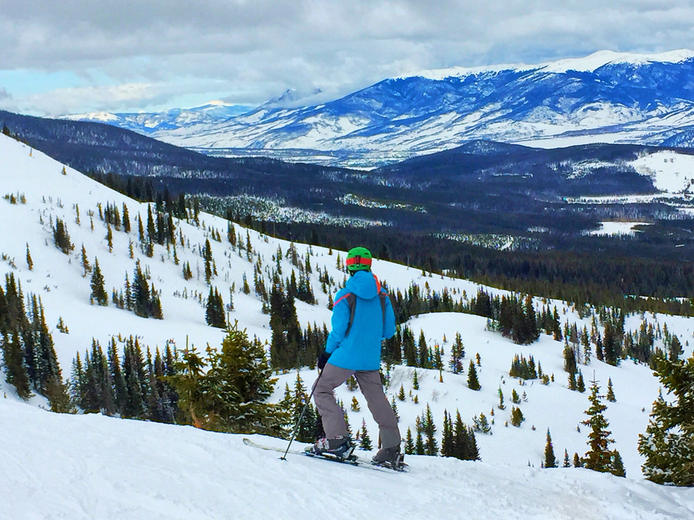

Home
About
Hobbies
Favorites
Hobbies
Things I Enjoy Doing

There are many things I enjoy doing and here are some of my top picks:
- Music
- Music has always been a huge part of my life, but I definitly realized my love for it in high school. I started to discover old rock bands, I bought
my first electric guitar (and performed on stage with it less than a year later), began collecting records and CDs, and making my own tunes. Since I've
been at Madison, my passion for the art has only grown exponentially. Ever since, I've learned how to play many more instruments, built my own guitar,
play in the marching band, host my own radio show, and now I book bands to perform at the Wisconsin Unions. A crazy musical journey to say the least.
- Skiing/Boarding
- With my love of the outdoors comes a love for adrenaline, and that takes place in the form of skiing and boarding. Summer or winter, water or land, I
absolutely love strapping myself into one of these things and whipping my body around at speeds over 30 mph. I've grown up water skiing and snow skiing,
but love the occasional wakeboard and snowboarding runs as well as wake surfing and longboarding. I absolutely love doing these, as they are a great way
to hang out with family and friends, and no matter how long you've done them you can always try something new!
- Games
- Whether it's board, video, or sports, I thrive on competitive activity, but for good fun. Games are a great way to burn off steam, socialize, or get
your mind off of something else. While board games can be quick fun, video games these days can last days on end and immerse you in a completely different
world of your fantasy, with my personal favorites being historical adventure games. Sports are just a great way to build community, playing or watching,
rooting for the Badgers or playing on an intramural hockey team. I will say though, my favorite games have to be bar sports, including billiards, foosball,
ping-pong, and darts.
- Tech
- While I say tech, I suppose I really mean experimenting with technology. I am a very hands-on learner and love learning about new and upcoming technologies
by trying them out, not just on computers but with physical equipment as well. As mentioned briefly before I built my own guitar, which had led me to
soldering and wiring my own hardware for the first time. Messing with other audio equipment is also great, as I have been building an audio rig for a while
now consisting of a record player, CD player, radio, and computer communication for mixing live tracks. Having a basic understanding of technology, whether
it's hardware or digital, can open many doors in the future and is close to becomming essential, so I'm glad I enjoy it.
Click here to continue to my favorites, or use the navigation above!